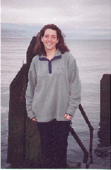
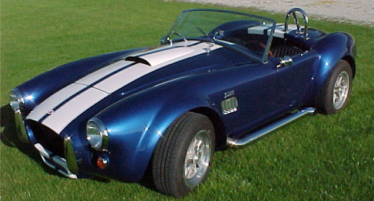
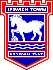

A little bit about me...
|
Amanda my wife ...  |
I am married and live with my lovely wife called Amanda just ouside Sheffield in South Yorkshire. Amanda was a district nurse at Firth Park clinic, but now works as a mum looking after our georgeous baby boy called Jacob (or JP)!
I was working at BT Labs (now called Adastral Park) up until the end of July 1999 when I left to join the University of Sheffield to begin my postgraduate degree. I started at Adastral Park as a hardware/software technician and obtained sponsorship for a Computer Science degree course at the University of York in 1996. I graduated in July 1998. I have been working at the University of Sheffield ever since in the Departments of Computer Science and Information Studies.
|
Amanda and I are both Christians and attend Darfield Parish Church, an anglican church in Barnsley. We both lead a fellowship group and I am a co-leader in the Sunday School. A useful provider of Christian resources is The Good Book company.
We are also both involved with Church Youth Fellowship Association (CYFA) Christian summer camps for children between the ages of 14 and 18. CYFA is a branch of the Church Pastoral Aid Society, an Anglican mission agency helping churches to evangelise, teach and pastor. We are both leaders on the Foremarke 1 CYFA Venture held at Foremarke Hall, near Derby.
|  | I'm an avid AC Cobra car fan. I don't own one (yet!) but just can't help but admire the beauty and sheer awesome power of one of the World's fastest road cars. The AC Cobra was originally built in the 1960's and although now very desireable many manufacturer's have started producing kit car replicas. |
| I am also an Ipswich Town FC fan and have been since an early age (I'm Suffolk born and bred!). Ipswich Town are a first division club with their home ground at Portman Road .... come on you blues ..... ! |  |
And finally, with any time left that is not spent gardening, DIYing or walking ... I also enjoy swimming, squash, walking in the Peaks (in fact there's even a rock named after me!!), spending as much time as I can with Amanda and playing the guitar. For a few links to useful guitar sites, click here.
|
Last Modified: June 2004 By: Paul Clough |